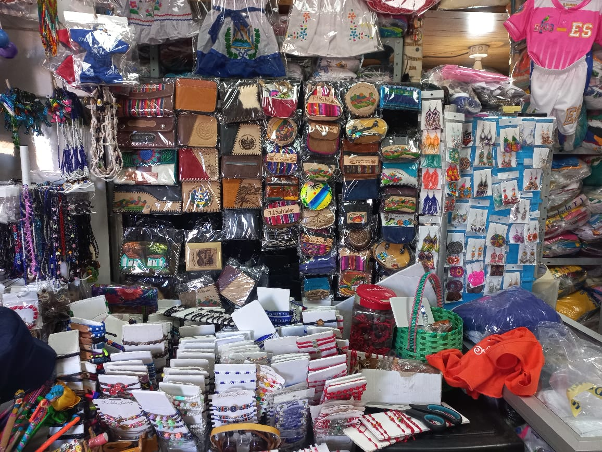
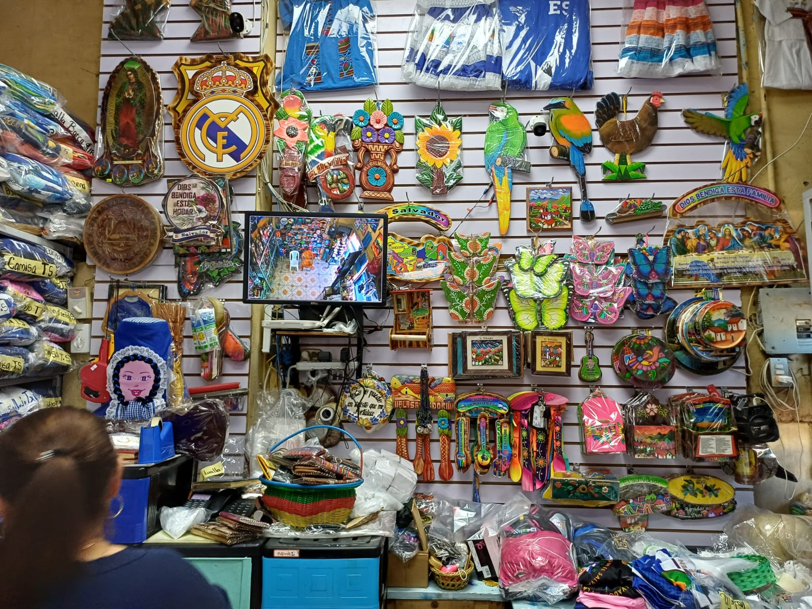
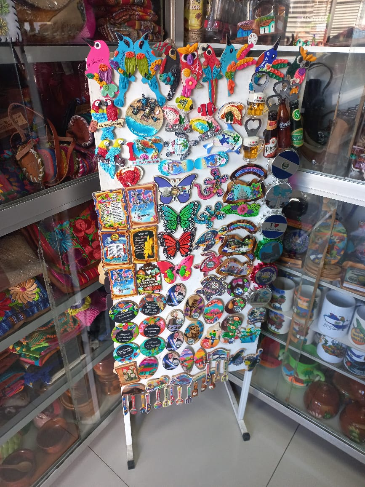
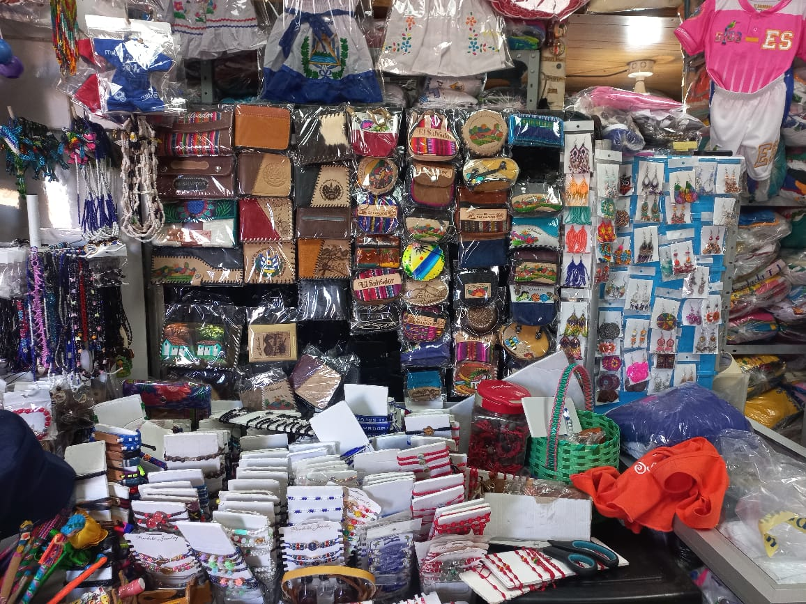
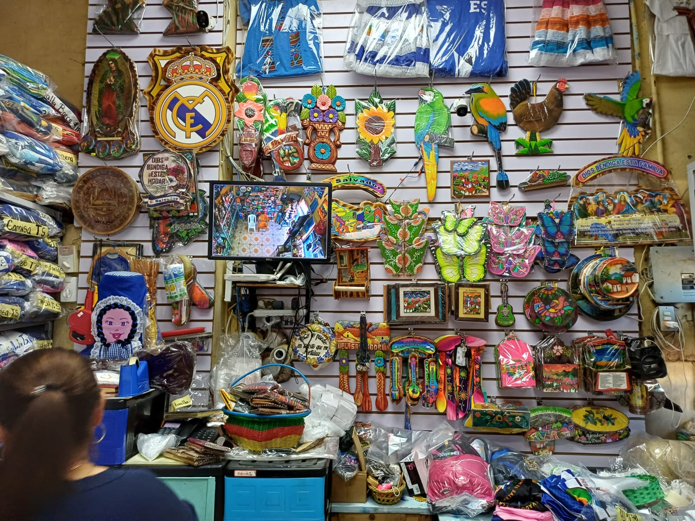
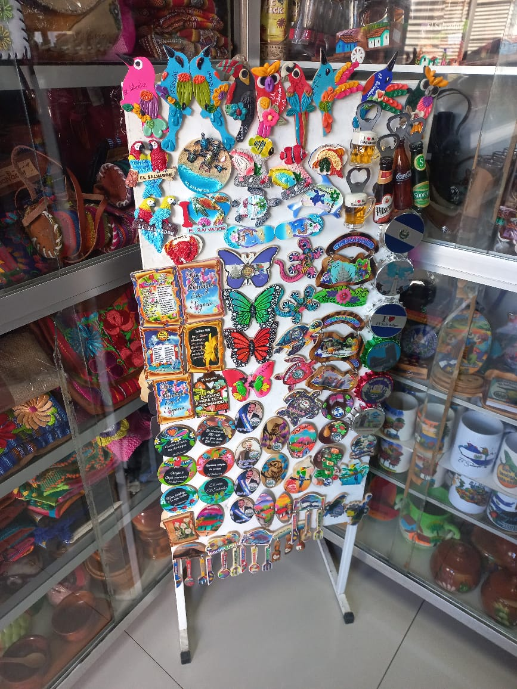

En la década de los 90, Celenia inició su camino en el mundo del comercio con la venta de zapatos. Sin embargo, ante el aumento de la competencia, su negocio no prosperó. Fue entonces cuando su madre le sugirió incursionar en la venta de artesanías, un mercado poco explorado en Usulután.
Comenzó con la venta de llaveros en un pequeño local del mercado Número 1 de Usulután. Conseguir los productos no fue fácil, ya que los artesanos y proveedores se encontraban en San Salvador y La Palma. Celenia viajaba constantemente en autobús para abastecerse, enfrentando dificultades en el transporte de la mercancía. Con el tiempo, logró adquirir su propio vehículo, lo que facilitó la expansión de su negocio.
Gracias a la calidad de sus productos y su esfuerzo, la tienda fue creciendo. Con el tiempo, empezó a importar artesanías de Guatemala y Nicaragua, lo que le permitió ofrecer una mayor variedad y mejores precios. Su éxito la llevó a abrir una segunda tienda, consolidando su presencia en el mercado.
Originalmente, su negocio se llamó Artesanías Helen en honor a su hija. Sin embargo, recientemente cambió el nombre a Artesanías Conchita, en tributo a su madre, quien fue clave en la fundación del negocio.
Hoy en día, Artesanías Conchita es un referente en la venta de artesanías salvadoreñas, atrayendo tanto a clientes locales como extranjeros. Con cada pieza vendida, se comparte un pedazo de la cultura y tradición de El Salvador.
Misión y Visión de la empresa.
Misión
"En Artesanías Conchita, nuestra misión es transformar la tradición en creatividad, ofreciendo piezas de artesanía que capturan la esencia y la autenticidad de nuestra cultura. Nos comprometemos a apoyar a los artesanos locales, promoviendo técnicas tradicionales y materiales sostenibles para crear productos únicos que enriquezcan la vida de nuestros clientes. Valoramos la calidad, la originalidad y el compromiso con el medio ambiente en cada creación, buscando siempre hacer de cada pieza un reflejo de la dedicación y la pasión que ponemos en nuestro trabajo."
Visión
"En Artesanías Conchita, aspiramos a ser el referente principal en el mundo de la artesanía, reconocido por nuestra excelencia en la calidad y la autenticidad de nuestros productos. Imaginamos un futuro en el que nuestras piezas no solo embellezcan hogares y espacios, sino que también inspiren un aprecio más profundo por las tradiciones culturales y el arte hecho a mano. Queremos fomentar un impacto positivo en la comunidad y el medio ambiente, siendo un puente entre el legado artesanal y las nuevas generaciones de apreciadores del arte."
Valores de la empresa
- Honestidad: Nos comprometemos a brindar información clara y veraz sobre nuestros productos, asegurando que cada cliente reciba artículos de calidad a precios justos.
- Amabilidad: Atendemos a cada persona con cortesía y calidez, creando un ambiente acogedor para que nuestros clientes se sientan bienvenidos y valorados.
- Respeto: Valoramos la diversidad de nuestros clientes y colaboradores, promoviendo un trato digno y cordial en cada interacción.
- Integridad: Actuamos con transparencia y ética en todas nuestras operaciones, manteniendo la confianza de nuestros clientes y proveedores.
- Responsabilidad: Nos esforzamos por cumplir con nuestros compromisos y ofrecer productos que representen con orgullo la cultura salvadoreña, garantizando un servicio de calidad.
Galería de nuestra historia
 




